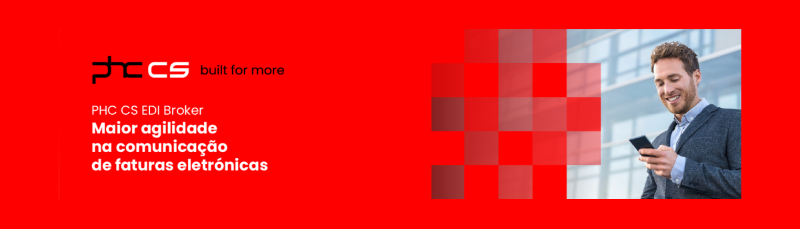

Temos diferentes soluções para diferentes negócios, ajudamos no sucesso e crescimento da sua empresa. Descubra o PHC, o ETPOS e o MSS!
PHC
O PHC é uma solução de software de gestão integrada desenvolvida para auxiliar empresas de todos os portes e setores a otimizar seus processos, aumentar a eficiência operacional e impulsionar o crescimento sustentável. Com uma ampla gama de módulos e funcionalidades abrangentes, o PHC oferece uma abordagem holística para gerir todos os aspectos essenciais do negócio.
ETPOS
O Etpos é a plataforma líder em gestão de pontos de venda, oferecendo soluções completas para negócios de todos os tamanhos. Nosso sistema inovador simplifica e otimiza operações de varejo, fornecendo ferramentas poderosas para gerenciar estoques, vendas, e clientes de forma eficiente.